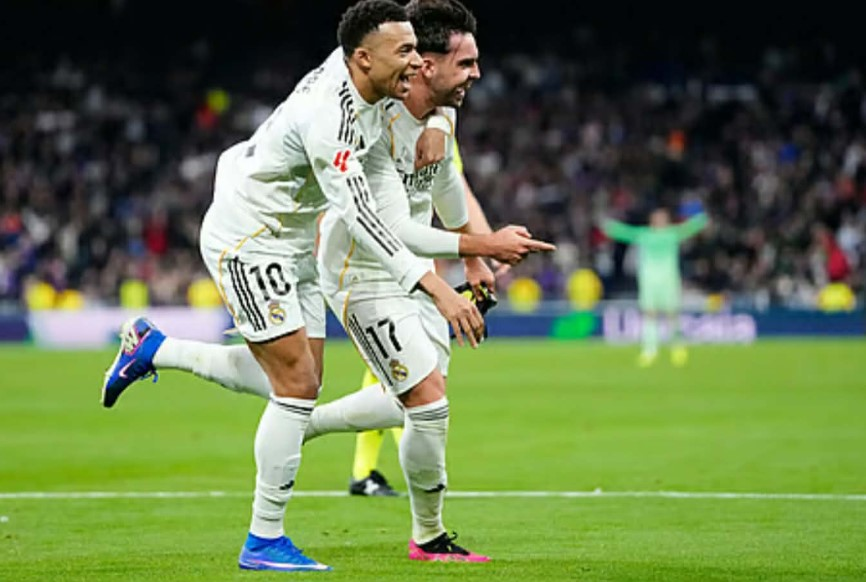

غضب جماهير ريال مدريد
عبرت الجماهير عبر وسائل التواصل الاجتماعي عن غضبها من الأداء، مطالبة بتغييرات جذرية تعيد للفريق هيبته المعهودة.
تحليل شامل للأسباب، النتائج، والخلافات
يمر نادي ريال مدريد بفترة صعبة هذا الموسم، حيث تراجعت النتائج بشكل واضح مقارنة بالموسم الماضي، وسط أزمات فنية، خلافات داخل الفريق، وغضب جماهيري متزايد بعد الإخفاقات الأخيرة.
رغم أن الموسم الماضي لم يكن مثاليًا، إلا أن الفريق حافظ على قدر من التوازن والقدرة التنافسية. أما الموسم الحالي فيُعد أسوأ من حيث النتائج والاستقرار الفني، مع فقدان الهوية داخل الملعب.
تداولت وسائل الإعلام وجود توتر داخل غرفة الملابس، خاصة بعد قدوم نجوم جدد وتضارب الأدوار داخل الملعب، مما أثر سلبًا على الانسجام الجماعي.
"شهد ريال مدريد بداية موسم صعبة بعد خسارته في بطولة السوبر الإسباني أمام برشلونة بنتيجة 3‑2، وهو ما أثار موجة من الانتقادات الإعلامية والجماهيرية حول أداء الفريق في المباريات الحاسمة. هذه الخسارة لم تكن مجرد نتيجة، بل كشفت عن توتر داخلي بين اللاعبين والجهاز الفني، حيث أبدى بعض نجوم الفريق اعتراضهم على بعض القرارات التكتيكية للمدرب تشابي ألونسو، مثل تغييرات اللاعبين وخطط اللعب، مما زاد من الضغط على الإدارة والجهاز الفني على حد سواء. تراجع شعبية تشابي ألونسو بشكل ملحوظ بين جماهير ريال مدريد واللاعبين على حد سواء، خصوصًا بعد الأداء الباهت للفريق في المباراة، وهو ما أدى في النهاية إلى استقالته من تدريب الفريق وتعيين المدرب البديل ألفارو أربيلوا. المشهد كان واضحًا خلال المباراة، حيث ظهرت علامات الاستياء على لاعبين مثل فينيسيوس ومبابي، والذين أعربوا عن اعتراضهم على بعض القرارات داخل الملعب، وهو ما ساهم في تفاقم المشاكل داخل الفريق. هذه الأحداث جعلت الإدارة تدرك أن الفريق يحتاج إلى إعادة هيكلة فنية سريعة، واستقدام مدرب قادر على إعادة الانضباط والتنسيق بين اللاعبين، لاستعادة ثقة الجماهير قبل المباريات القادمة في الدوري الإسباني وكأس الملك، خصوصًا مع استمرار المنافسة القوية على الألقاب المحلية والقارية."
شهدت آخر مباريات ريال مدريد في كأس الملك خسارة صادمة، اعتبرتها الجماهير واحدة من أسوأ اللحظات هذا الموسم، وزادت من الضغط الإعلامي والجماهيري على الفريق. أول اختبار للمدرب الجديد جاء في مباراة كأس الملك أمام ألباسيتي، حيث خسر الفريق بنتيجة مفاجئة 3‑2، مما زاد من الانتقادات تجاه طريقة إدارة المباريات والأداء التكتيكي للفريق. الأداء الباهت للاعبين في المباريات الحاسمة، إلى جانب التوتر والخلافات بين بعض نجوم الفريق، زاد من حدة التساؤلات حول قدرة أربيلوا على قيادة ريال مدريد نحو استعادة الانتصارات.
عبرت الجماهير عبر وسائل التواصل الاجتماعي عن غضبها من الأداء، مطالبة بتغييرات جذرية تعيد للفريق هيبته المعهودة.
في مباراة الجولة الـ20 من الدوري الإسباني، فاز ريال مدريد على ليفانتي بنتيجة 2‑0 في استاد سانتياغو برنابيو. رغم الأداء الضعيف الذي ظهر في بعض فترات المباراة، تمكن الفريق من تحقيق الانتصار المهم.
سجل كيليان مبابي الهدف الأول من ركلة جزاء في الدقيقة 58، وأضاف راوول أسينسيو الهدف الثاني برأسية قوية في الدقيقة 65. هذا الفوز أعطى دفعة معنوية للفريق بعد سلسلة النتائج المخيبة السابقة في السوبر الإسباني وخروج الفريق من كأس الملك.
الجماهير أبدت استياءها قبل المباراة بصافرات وصيحات غضب، لكنها شعرت بالارتياح بعد انتهاء المباراة بالفوز. مع ذلك، لا تزال التوقعات عالية لتحسين الأداء في المباريات المقبلة واستعادة الروح القتالية للفريق.
يعيش ريال مدريد مرحلة دقيقة تتطلب قرارات حاسمة، سواء على المستوى الفني أو الإداري، من أجل استعادة التوازن والعودة للمنافسة بقوة.